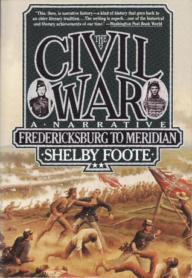

The Civil War, Vol. 2
⭐️⭐️⭐️⭐️⭐️
Format: audio (47 hours 11 minutes)
- Previously: Spin
- Next: We'll Stand by the Union
I enjoyed this book much more than the first in the series. Admittedly, I was most captivated by the sections on Vicksburg and Gettysburg, with Sherman's rampage to/of Meridian. I'd love to see more detail about Gettysburg, perhaps an animated storyline, showing where/how troops moved and attempted/accomplished what objectives. At Vicksburg I could feel the patience of Grant, and the peril of Pemberton and his besieged army within the city. Additionally, the swath of destruction caused by Sherman through the south still comes across as cold and heartless, though fixed determinately on ending a rebellion.
This has been a very enlightening series, and gives far more perspective than our history books generally convey. Although I empathize with the South and their desire to just be left alone, my heart remains with the North and their desire for unity and doing away with a horrible practice. I can only imagine how the War would have been different had Lee been part of the Union. I admire his aggressiveness, perseverance, and ingenuity, though pity his opinion on slavery. My real hero is Lincoln, who I find the most fascinating. I need to find a good book about him for after this series.
I now better understand the plight of both sides at different points, and I'm afraid to venture into the final installment in this series, since I know things don't end well for one side. Although I ultimately disagree with their practices, I can only imagine I'd feel like a conquered nation, somehow inferior... nobody wants to feel that way.
To cover four years with 2976 pages for the full trilogy, Foote's breadth and depth are impressive, and help give a great taste to practically every event in the war. I'd favor more natural breaks in the story, but when it comes to narrating history this thoroughly, you have to play the hand you're dealt. This compilation of feints is not for the faint of heart.